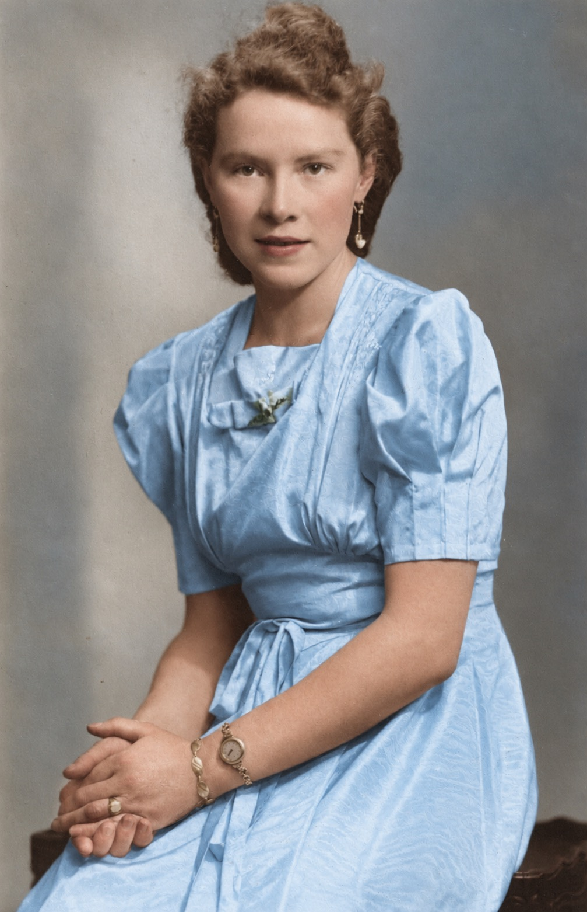
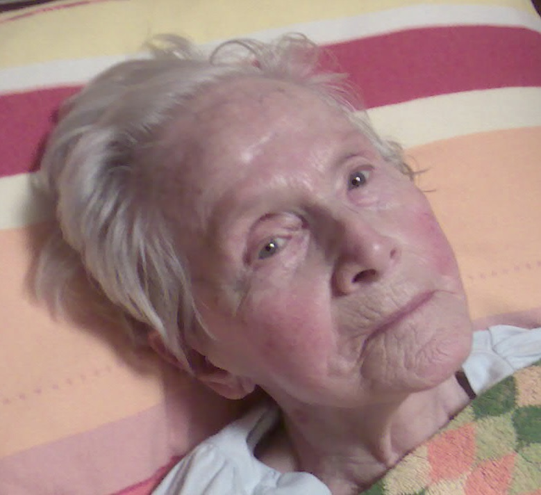
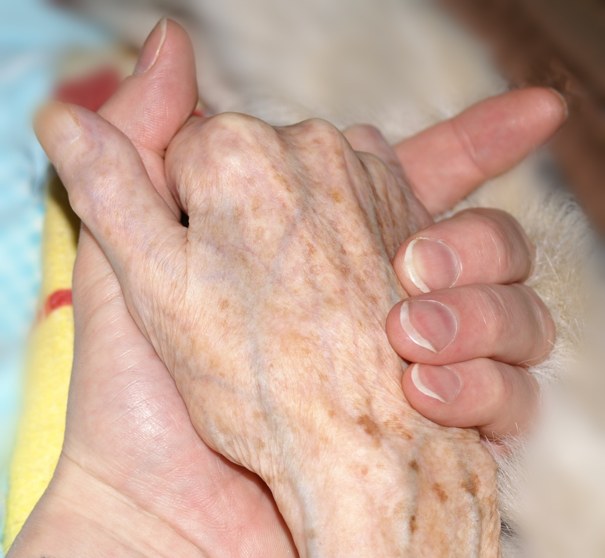
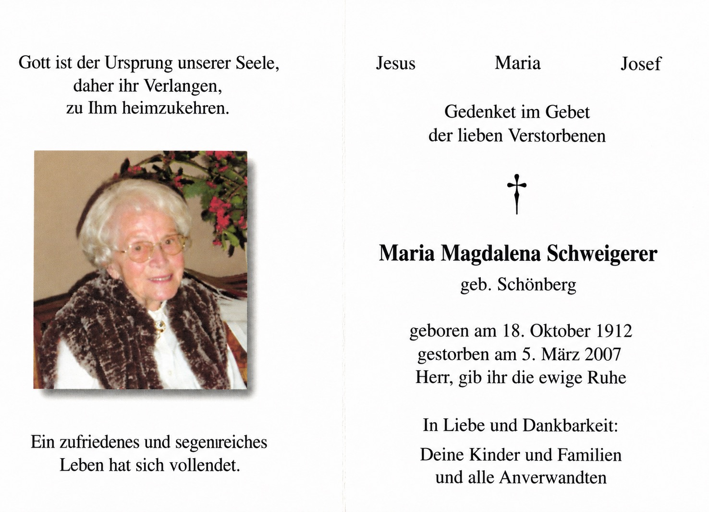

Maria Magdalena Schweigerer, geborene Schönberg (18. Dezember 1912 – 5. März 2007)
Wenn ich heute an meine Mutter denke, sehe ich zunächst die Frau, die ich aus meiner Kindheit kannte: fürsorglich, pflichtbewusst, etwas streng und tief religiös. Aber das war nur ein Teil ihrer Persönlichkeit. Aus den Erinnerungen ihrer Schwester Maria, den Briefen an meinen Vater und den Erzählungen meiner Mutter selbst ergibt sich das Bild einer jungen Frau, die andere Vorstellungen vom Leben gehabt haben dürfte als jene, die sie später verwirklichen konnte. Sie war sportlich, selbstständig, wissbegierig und für ihre Zeit ziemlich modern. Vieles davon geriet später hinter den Aufgaben einer Mutter von sechs Kindern in den Hintergrund.
Die junge Lenchen
Meine Mutter wurde am 18. Dezember 1912 im Forsthaus Winterspelt in der Eifel geboren. Ihr Vater Ludwig Philipp Schönberg war Förster, ihre Mutter Anna Maria, geborene Weber, führte den Haushalt und kümmerte sich um die neun Kinder. Die Familie zog mehrfach um, zunächst nach Scheitenkorb, später nach Üdersdorf, Prüm und schließlich nach Jünkerath.
Ihre jüngere Schwester Maria hat Erinnerungen an die gemeinsame Kindheit hinterlassen. Die beiden mussten zeitweise einen drei Kilometer langen Schulweg zurücklegen. Unterwegs gab es allerlei zu entdecken, Tiere, Pflanzen und andere Dinge, die interessanter waren als der Unterricht. Gelegentlich kamen sie deshalb zu spät zur Schule. Einmal pflückten sie Brombeeren, die sie ihrer Mutter schenken wollten. Weil sie kein Gefäß dabeihatten, füllten sie die Früchte in ihre Strohhüte. Zu Hause waren die Hüte vom Beerensaft gründlich verfärbt. Die Mutter nahm es mit Humor.
Es war eine Kindheit in einer großen Försterfamilie, geprägt von der Natur, aber auch von einer strengen Erziehung. Mein Großvater war ein Mann, der Gehorsam erwartete und körperliche Züchtigungen für ein geeignetes Erziehungsmittel hielt. Meine Mutter hat manches davon später übernommen, wenn auch in abgeschwächter Form.
Nach der Volksschule besuchte sie 1933/34 ein Haushaltspensionat im St.-Josefs-Kloster in Prüm. Eine weiterführende Schulbildung erhielt sie nicht. Das hat sie ihr Leben lang bedauert. Sie war intelligent, hatte Interesse an Bildung und hätte sich gerne weiterentwickelt. Die Möglichkeiten dazu waren für eine junge Frau aus ihrer Familie damals begrenzt.
Dabei war sie keineswegs ein zurückhaltendes Mädchen, das sich mit allem abfand. Als ihr Vater 1938 nach Jünkerath versetzt wurde, war sie 25 Jahre alt. Sie stand morgens früh auf, lief allein durch den Wald und duschte sich anschließend kalt ab. Heute würde man das Joggen nennen. Damals war es zumindest für eine junge Frau keine alltägliche Beschäftigung.

Sie hatte auch bereits den Führerschein gemacht und chauffierte ihren Vater, der inzwischen Oberförster war. Der war von ihrem Fahrstil nicht immer begeistert. Wenn sie es besonders eilig hatte, bemerkte er gelegentlich, sie fahre wieder einmal in einer „jüdischen Hast“. Eine antisemitische Redewendung jener Zeit, die auch im Hause Schönberg verwendet wurde.
Im Forstamt arbeitete damals ein junger Forstgehilfe namens Heinz Schweigerer. Er fuhr manchmal auf dem Rücksitz mit. Meine Mutter betrachtete ihn öfter im Rückspiegel, als ihrem Vater lieb war. Der wies sie zurecht, sie solle nicht dauernd nach dem Schweigerer schauen. Das hat wenig genutzt. Aus dem jungen Forstgehilfen wurde mein Vater.
Krieg und Familiengründung
Am 27. Dezember 1941 heirateten meine Eltern in Jünkerath. Es war eine Hochzeit mitten im Krieg. Mein Vater war Soldat, und die gemeinsame Zeit beschränkte sich zunächst auf gelegentliche Urlaube.
Die Briefe meiner Mutter aus diesen Jahren zeigen eine sehr gefühlvolle Frau. Sie schrieb liebevoll und voller Sehnsucht an ihren Mann, machte sich Sorgen um ihn und litt unter der langen Trennung. Ihre Mutter war im April 1941 gestorben. In einem Brief an Heinz beschrieb Lenchen, wie sehr sie sich danach sehnte, noch einmal an das Bett ihrer Mutter zu treten, ihre Hand zu streicheln und ihr zu sagen, wie lieb sie sie hatte.
Der Verlust traf sie schwer. Das Verhältnis zu ihrem Vater wurde bald zusätzlich belastet. Er heiratete bereits 1942 erneut, eine Frau namens Maria Dötsch, genannt Maichen. Meine Mutter und ihre Schwester Maria waren darüber sehr unglücklich. Schließlich verließ meine Mutter Jünkerath und zog mit ihrer kleinen Tochter Marlene nach Neidenbach.
Ich glaube, sie hat ihrem Vater diese Entwicklung nie ganz verziehen. Gleichzeitig hing sie an ihm. Vielleicht war gerade das ihr Problem: Sie konnte sich emotional nicht von einem Menschen lösen, von dem sie sich verletzt fühlte.
Der Krieg brachte weitere Schicksalsschläge. Vier ihrer Brüder fielen. Mein Vater wurde mehrfach verwundet und verlor schließlich durch eine schwere Verletzung seinen linken Unterschenkel.
Flucht und Ungewissheit
Im Herbst 1944 war die Lage in der Eifel zunehmend gefährlich geworden. Tiefflieger beschossen Fahrzeuge und Menschen auf den Straßen. Meine Mutter war wieder schwanger und hatte die kleine Marlene zu versorgen. Im Oktober 1944 machte sie sich deshalb zusammen mit Marlene und ihrem Schwiegervater auf den Weg nach Thüringen. Sie kamen bei Verwandten im Forsthaus Seebach bei Pößneck unter.
Am 28. Januar 1945 wurde mein Bruder Heinz-Josef im Krankenhaus von Ranis geboren. Die Geburt verlief gut, aber die Wochen danach waren schwer. Die Postverbindungen zur Front brachen zusammen. Meine Mutter wusste nicht, wo sich mein Vater befand und ob er überhaupt noch lebte. Aus seinen späteren Aufzeichnungen geht hervor, dass sie wochenlang keine Nachricht von ihm erhielt.
Auch die Versorgung der Kinder war schwierig. Die Familie, bei der sie untergebracht war, besaß Kühe, gab die Milch aber lieber den eigenen Tieren. Meine Mutter musste deshalb täglich ins nächste Dorf gehen, um Milch für Marlene und den Säugling zu besorgen. Heinz-Josef litt unter Erbrechen und Bauchkrämpfen. Mein Vater führte das später auf die seelische Belastung meiner Mutter zurück. Ob dieser Zusammenhang tatsächlich bestand, lässt sich nicht sagen. Ihre Sorgen müssen jedenfalls erheblich gewesen sein.
Währenddessen kämpfte mein Vater in Ostpreußen. Am 13. April 1945 wurde er schwer am Fuß verletzt. Die Verletzung führte schließlich zur Amputation des linken Unterschenkels. Er kam nach Stralsund ins Lazarett und erlebte dort das Kriegsende. Meine Mutter wusste von alledem zunächst nichts.
Die Rückkehr nach Neidenbach
Nach Kriegsende war Deutschland in Besatzungszonen aufgeteilt. Reisen waren schwierig, Bahnverbindungen unterbrochen, viele Brücken und Tunnel zerstört. Meine Mutter befand sich mit zwei kleinen Kindern in Thüringen und musste versuchen, wieder in die Eifel zu gelangen.
Als sie schließlich mit Marlene und Heinz-Josef nach Neidenbach kam, war auch dort die Wohnsituation schwierig. Das Forsthaus meiner Großeltern war von französischen Soldaten besetzt worden. Die Großeltern hatten deshalb bei Nachbarfamilien Unterkunft gefunden. Für meine Mutter und die beiden Kinder wurden bei der Familie Thielen zwei Zimmer eingerichtet.
Mein Vater kehrte im September 1945 aus dem Krieg zurück. Er hatte seinen linken Unterschenkel verloren und musste erst lernen, mit seiner Behinderung zurechtzukommen. Für meine Mutter dürfte seine Heimkehr nach den Monaten der Ungewissheit eine ungeheure Erleichterung gewesen sein. Aber nun mussten die beiden unter sehr bescheidenen Verhältnissen versuchen, wieder ein gemeinsames Familienleben aufzubauen.
Meine Großeltern konnten später in das zunächst beschlagnahmte Forsthaus zurückkehren. Meine Eltern dagegen blieben mit ihren Kindern vorerst bei Thielens untergebracht. Es waren beengte Verhältnisse, aber immerhin hatte die Familie wieder ein gemeinsames Dach über dem Kopf.
Eine Kuh und ein neuer Anfang
Die ersten Nachkriegsmonate waren von Entbehrungen geprägt. Lebensmittel waren knapp, Geld hatte wenig Kaufkraft, und vieles musste durch Tauschgeschäfte beschafft werden.
Im November 1945 erhielt meine Mutter aus ihrem Erbteil in Steinborn eine Kuh. Das war damals ein aussergewöhnlich kostberer Besitz. Eine Kuh bedeutete Milch für die Kinder und damit ein Stück Unabhängigkeit von der unsicheren Lebensmittelversorgung. In unserer Familiengeschichte ist sie als Frida in Erinnerung geblieben. Sie war ein widerspenstiges Tier mit einem eigensinnigen Charakter. Aber immerhin lieferte sie Milch - wenn sie wollte.
Auch die Hamsterzucht gehört zu den Geschichten dieser Zeit. Was heute etwas kurios klingt, war damals Ausdruck der Notwendigkeit, mit den wenigen vorhandenen Mitteln auszukommen.
Ende November 1945 machte sich meine Mutter zusammen mit ihrer Schwägerin Sofia noch einmal auf den Weg nach Thüringen, um dort zurückgelassene Habseligkeiten abzuholen. Die Reise führte über die Demarkationslinie in die sowjetisch besetzte Zone. Vier Wochen waren die beiden unterwegs. Erst kurz vor Weihnachten kamen sie wieder heil in Neidenbach an.
Ich stelle mir vor, was eine solche Reise damals bedeutete: zerstörte Verkehrswege, kaum zuverlässige Verbindungen, Kontrollen an den Zonengrenzen und die ständige Sorge, ob man überhaupt wieder nach Hause kommen würde. Meine Mutter hatte zwei kleine Kinder zurückgelassen und war dennoch losgefahren. Das zeigt etwas von ihrer Entschlossenheit, die ich aus meiner eigenen Kindheit nur noch in abgeschwächter Form kennengelernt habe.
Im Februar 1946 wurde mein Vater wieder in den Forstdienst übernommen. Wegen seiner Verletzung konnte er nicht mehr wie früher im Außendienst arbeiten. Im Forstamt Morbach war eine Stelle im Innendienst frei geworden, auf die er sich bewarb und die er schließlich erhielt.
Noch im Laufe des Jahres 1946 zog die Familie nach Morbach. Mit dabei waren Marlene, Heinz-Josef und die Kuh. Und gewissermaßen auch Ulli, meine zweite ältere Schwester, die damals noch im Bauch meiner Mutter heranwuchs. Sie wurde im Oktober 1946 geboren.
Nach Krieg, Flucht, Verwundung und den provisorischen Unterkünften in Neidenbach begann damit ein neuer Lebensabschnitt. Mein Vater hatte wieder eine feste Anstellung, und meine Eltern konnten sich langsam eine eigene Existenz aufbauen.
Der Wohlstand ließ allerdings weiterhin auf sich warten. Mein Vater war der einzige Verdiener, meine Mutter führte den Haushalt, und die Familie wuchs weiter. Schließlich waren wir sechs Kinder.
Meine Kindheit mit ihr
Meine frühesten Erinnerungen an meine Mutter sind überwiegend positiv. Wir Kinder hatten in Morbach ziemlich viel Freiheit. Ich konnte mit meinen Freunden durch das Dorf ziehen, im Wald spielen und Hütten bauen. Meine Mutter war allerdings besorgt, besonders wenn wir uns in den Wald aufmachten. Dann wollte sie genau wissen, wo wir hingingen und wann wir zurückkämen.
Sie kümmerte sich sehr um unsere Entwicklung. Besonders wichtig war ihr die Schulbildung. Sie selbst hatte nie die Gelegenheit gehabt, ein Gymnasium zu besuchen, und wollte ihren Kindern ermöglichen, was ihr versagt geblieben war.
In der Volksschule gehörte ich zu den guten Schülern. Meine Lehrerin Frau Bollinger förderte mich, und meine Mutter unterstützte das nach Kräften. Sie wollte, dass ich weiterlernte. Dass ich später studierte und schließlich Professor wurde, dürfte sie mit besonderem Stolz erfüllt haben. Vielleicht sah sie darin auch etwas von ihren eigenen unerfüllten Wünschen verwirklicht.
Sie achtete darauf, dass wir nicht nur in der Schule etwas lernten, sondern auch unter die Leute kamen. Deshalb meldete sie mich bei den Pfadfindern, den Messdienern, im Turnverein und im Kinderchor an. Nicht alles entsprach meinen Neigungen. Den Turnverein mochte ich überhaupt nicht. Diese Turngeräte, Barren und sonstigen Gerätschaften waren mir ziemlich suspekt. Auch die Messdienerei gehörte nicht gerade zu meinen Lieblingsbeschäftigungen.
Immerhin hatte sie dafür gesorgt, dass ich verschiedene Dinge kennenlernte. Und manches blieb hängen. Besonders das Lesen. In der katholischen Pfarrbücherei lieh ich mir regelmäßig Bücher aus. Die Buchausstellungen in der Adventszeit waren für mich kleine Ereignisse. Ich stöberte gerne darin herum und wurde allmählich zu einer richtigen Leseratte. Meine Mutter hat das gefördert, und dafür bin ich ihr bis heute dankbar.
Der Glaube und die Pflichten
Meine Mutter war tief religiös. Ich weiß nicht, ob sie von Anfang an so fromm gewesen war oder ob sich ihre Religiosität erst durch die vielen Verluste und Belastungen ihres Lebens verstärkte. Jedenfalls spielte die katholische Kirche in unserem Familienalltag eine große Rolle.
Sonntags mussten wir Kinder in die Frühmesse. Mein Vater durfte ins Hochamt gehen, das erst um zehn Uhr begann. Warum ihm dieses Privileg zustand und uns nicht, habe ich nie verstanden. Manchmal mussten wir nachmittags auch noch zur Andacht oder Litanei. Unsere Begeisterung hielt sich in Grenzen. Zu Hause wurde vor dem Essen gebetet. Sonntags wurde aus dem Paulinus, der katholischen Wochenzeitung, vorgelesen. Das fanden wir Kinder sterbenslangweilig. Meine Mutter dagegen nahm das sehr ernst.
Sie engagierte sich auch in religiösen Frauengruppen, unter anderem in der Legio Mariens. Dort fand sie offenbar eine Gemeinschaft, die ihr etwas bedeutete. In das sonstige Vereinsleben von Morbach war sie dagegen weniger eingebunden als mein Vater.
Nicht alles Religiöse war uns unangenehm. Im Mai richtete meine Mutter im Schlafzimmer meiner Eltern einen kleinen Marienaltar ein. Er wurde geschmückt, und abends sangen wir gemeinsam Marienlieder. Das hatte etwas Feierliches und zugleich Familiäres. Ich erinnere mich gerne daran.
Meine Mutter war in der Erziehung strenger als mein Vater. Körperliche Züchtigungen gab es gelegentlich auch bei uns. Eine Hundepeitsche spielte dabei eine gewisse Rolle, bis sie irgendwann verschwand. Ich kann mich allerdings kaum daran erinnern, selbst ernsthaft geschlagen worden zu sein. Mein Vater war nachsichtiger. Vielleicht hatte meine Mutter aus ihrem eigenen Elternhaus ein strengeres Verständnis von Erziehung mitgebracht.
Ein bescheidenes Leben
Unser Familienleben war von Sparsamkeit geprägt. Mein Vater war der einzige Verdiener, meine Mutter führte den Haushalt. Wir wohnten im Forstamt zur Miete. Mit sechs Kindern war das Geld knapp.
Sonntags gab es Braten. Unter der Woche standen häufig Kartoffeln auf dem Tisch. Nichts wurde weggeworfen. Trockenes Brot wurde in Milch eingeweicht und als Brotsuppe gegessen. Die Nachbarn behaupteten gelegentlich, die Schweigerers lebten vom Pudding. Ganz so schlimm war es nicht, aber große Sprünge konnten wir nicht machen.
Meine Mutter organisierte diesen Haushalt mit einer Selbstverständlichkeit, über die wir Kinder damals kaum nachdachten. Heute sehe ich das anders. Sechs Kinder zu versorgen, zu erziehen, zu bekleiden und durch die Schule zu bringen, war eine erhebliche Leistung, zumal sie selbst kaum Gelegenheit hatte, einmal etwas nur für sich zu tun.
Hinzu kam eine körperliche Behinderung. 1954 ging sie mit meinem Vater auf der Hunsrückhöhenstraße spazieren, als ein vorbeifahrender amerikanischer Militärlastwagen ihren ausgestreckten Ellenbogen traf. Der Knochen brach. Die Behandlung im kleinen Morbacher Krankenhaus verlief unglücklich. Das Gelenk entzündete sich, vereiterte und blieb schließlich steif. Sie musste fortan mit einem in seiner Beweglichkeit stark eingeschränkten Arm zurechtkommen. Ich kann mich nicht erinnern, dass sie viel darüber geklagt hätte. Sie nahm es hin. Es war eben so.
Später konnten wir uns auch gelegentlich Urlaub leisten. Wir fuhren nach Fiss und irgendwann sogar mit dem Auto nach Meran. Für uns waren das große Reisen. Meine Mutter war dabei, aber ich habe nicht den Eindruck, dass sie jemals eine Frau wurde, die das Leben unbeschwert genießen konnte.
Zwei unterschiedliche Temperamente
Meine Eltern waren recht verschiedene Menschen. Mein Vater war gesellig, unternehmungslustig und feierte gerne. Er engagierte sich im Karnevalsverein und später im Automobilclub. Er hatte Freude daran, Menschen um sich zu versammeln, und war auch innerhalb seiner großen Familie derjenige, der die Kontakte pflegte und organisierte.
Meine Mutter war zurückhaltender. Sie nahm an solchen Unternehmungen zwar teil, konnte sich aber selten so unbeschwert amüsieren wie mein Vater. Manchmal ärgerte sie sich darüber, wenn er es aus ihrer Sicht übertrieb. Dann wurde sie, wie sie selbst gesagt hätte, etwas „krabitzig“.
Im Alter kam es gelegentlich zu Auseinandersetzungen zwischen den beiden, bei denen wir Kinder uns fragten, warum sie eigentlich nötig waren. Vielleicht war es der Unterschied zwischen den beiden Familien, aus denen sie stammten. Die Schweigerers waren gesellig und lebenslustig, die Schönbergs strenger und stärker auf Pflichterfüllung bedacht. Jedenfalls habe ich meine Eltern so erlebt.
Vielleicht spielte aber auch etwas anderes eine Rolle. Meine Mutter hatte als junge Frau durchaus eigene Vorstellungen und Interessen gehabt. Später war sie vor allem Ehefrau, Mutter und Hausfrau. Mein Vater hatte seinen Beruf, seine Vereine und seine gesellschaftlichen Kontakte. Sie hatte die Familie und die Kirche.
Ob sie damit zufrieden war, weiß ich nicht. Ich glaube allerdings, dass sie sich manchmal ein anderes Leben gewünscht hätte.
Ihre letzten Jahre
Nach dem Tod meines Vaters lebte meine Mutter zunächst allein weiter. Mit zunehmendem Alter wurde das beschwerlich. Sie ließ sich Essen auf Rädern bringen, und irgendwann kam es vor, dass sie vergaß, die Herdplatten auszuschalten. Da wurde uns klar, dass sie nicht mehr allein bleiben konnte.
Sie zog in ein Seniorenheim in Morbach. Ich habe dieses Heim in sehr schlechter Erinnerung. Es roch nach Urin, und die Pflege ließ nach meinem Eindruck erheblich zu wünschen übrig. Für meine Mutter war das kein schöner letzter Lebensabschnitt.
Dort stürzte sie und brach sich den Oberschenkel. Sie war inzwischen über neunzig Jahre alt. Als Arzt wusste ich, dass eine solche Verletzung in diesem Alter oft den Beginn des letzten Lebensabschnitts markiert. Sie überstand die Operation und kam wieder auf die Beine, konnte aber nur noch mit einem Rollator gehen. Ihre Kräfte ließen zunehmend nach.
Anfang 2007 verschlechterte sich ihr Zustand erheblich. Wir rechneten damit, dass sie bald sterben würde, und kamen zusammen, um bei ihr zu sein. Wir wechselten uns nachts an ihrem Bett ab.

Ich erinnere mich noch gut an ihren Anblick. Sie lag klein und hilflos in ihrem Bett, wie ein verlorenes Vögelchen. Ich saß bei ihr und hielt ihre Hand.

Aber sie starb nicht. Nach einigen Tagen erholte sie sich noch einmal. Es war, als hätte sie es sich anders überlegt.
Am 5. März 2007 starb meine Mutter schließlich im Alter von 94 Jahren. Sie war allein in ihrem Bett, als sie starb. Meine Schwester Marlene rief mich an und überbrachte mir die Nachricht.
Mein Vater war im Kreis seiner Familie gestorben. Er hatte die Menschen um sich gehabt, die er liebte, so wie er auch im Leben gerne seine Familie um sich versammelt hatte. Meine Mutter dagegen starb still und allein.
Ob das ihrem Wunsch entsprach, weiß ich nicht. Sie war eine gläubige Frau und davon überzeugt, dass nach dem Tod noch etwas kommen würde. Vielleicht hat ihr dieser Glaube geholfen.

Was von ihr geblieben ist
Wenn ich heute auf das Leben meiner Mutter zurückblicke, sehe ich eine Frau, die mehr Fähigkeiten und Interessen hatte, als sie in ihrem späteren Leben entfalten konnte. Sie war sportlich, wissbegierig und selbstständig, hatte früh den Führerschein gemacht und war durchaus bereit, eigene Wege zu gehen.
Dann kamen Krieg, Verluste, die Behinderung ihres Mannes und sechs Kinder. Sie hat sich den Aufgaben gestellt, die das Leben ihr auferlegte. Nicht immer mit Leichtigkeit und nicht immer ohne Strenge, aber mit großem Verantwortungsgefühl.
Sie war keine makellose Mutter. Sie konnte streng, manchmal kleinlich und gelegentlich ungerecht sein. Aber sie sorgte für uns, förderte uns und wollte, dass wir es einmal besser hätten als sie selbst. Besonders unsere Bildung lag ihr am Herzen.
Vielleicht ist das ihr eigentliches Vermächtnis. Sie hat selbst nicht die Möglichkeiten bekommen, die sie sich gewünscht hätte, aber sie hat dafür gesorgt, dass ihre Kinder diese Möglichkeiten erhielten.
Wenn ich an sie denke, sehe ich deshalb nicht nur die alte Frau in ihrem Bett. Ich sehe auch die junge Lenchen, die morgens durch den Wald lief, anschließend kalt duschte und später ihren Vater im Auto durch die Eifel chauffierte. Und die dabei immer wieder in den Rückspiegel schaute, weil hinten ein junger Schweigerer saß.
So möchte ich sie in Erinnerung behalten.